出版物
2025
会议论文
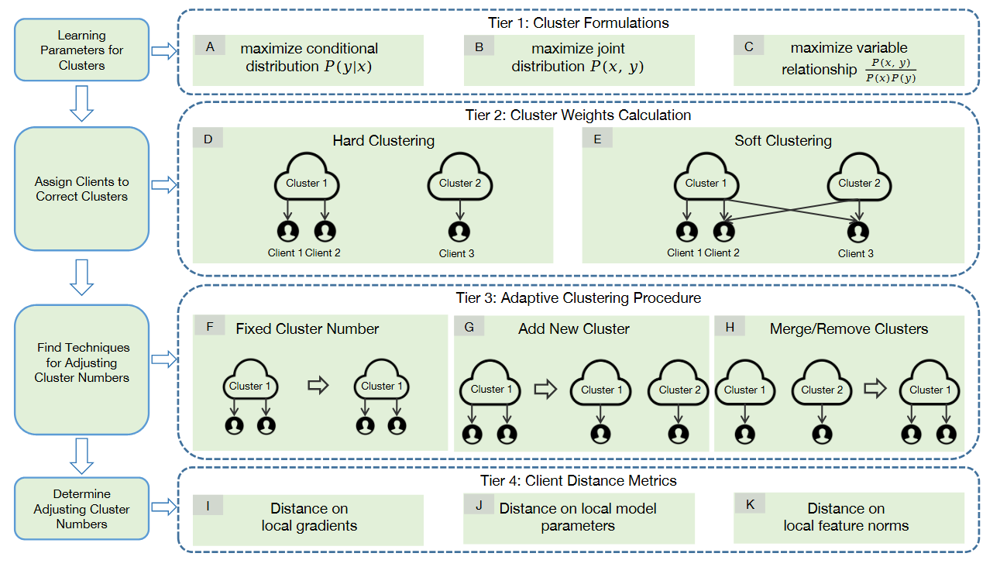
Enhancing Clustered Federated Learning: Integration of Strategies and Improved Methodologies
The Thirteenth International Conference on Learning Representations (ICLR 2025)
PDF
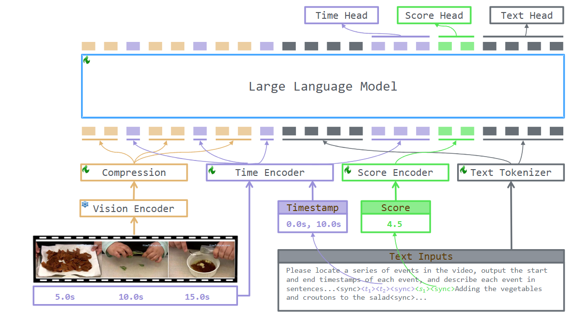
TRACE: Temporal Grounding Video LLM via Causal Event Modeling
The Thirteenth International Conference on Learning Representations (ICLR 2025)
PDF
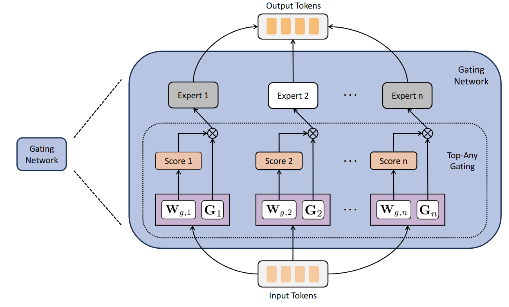
Dynamic mixture of experts: An auto-tuning approach for efficient transformer models
The Thirteenth International Conference on Learning Representations (ICLR 2025)
PDF
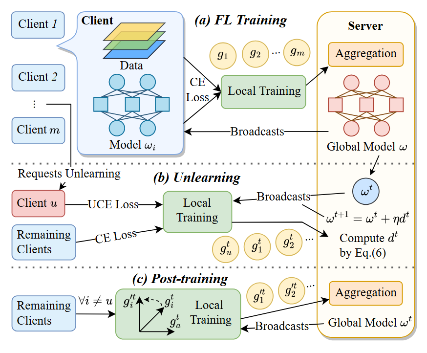
Federated Unlearning with Gradient Descent and Conflict Mitigation
Proceedings of the 39th AAAI Conference on Artificial Intelligence (AAAI-25)
PDF
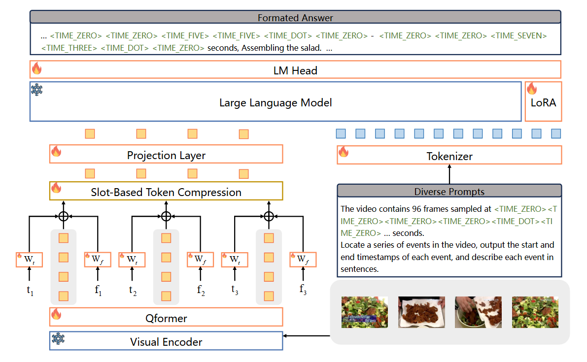
VTG-LLM: Integrating Timestamp Knowledge into Video LLMs for Enhanced Video Temporal Grounding
Proceedings of the 39th AAAI Conference on Artificial Intelligence (AAAI-25)
PDF
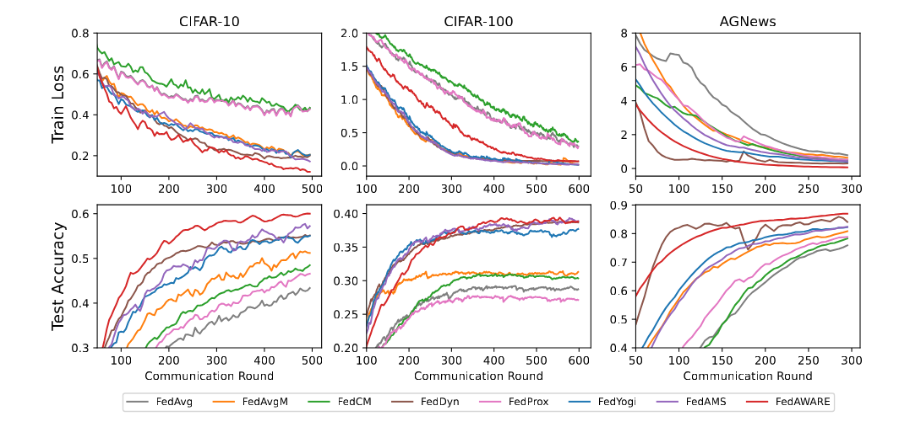
On the Power of Adaptive Weighted Aggregation in Heterogeneous Federated Learning and Beyond
The 28th International Conference on Artificial Intelligence and Statistics (AISTATS)
PDF
期刊论文
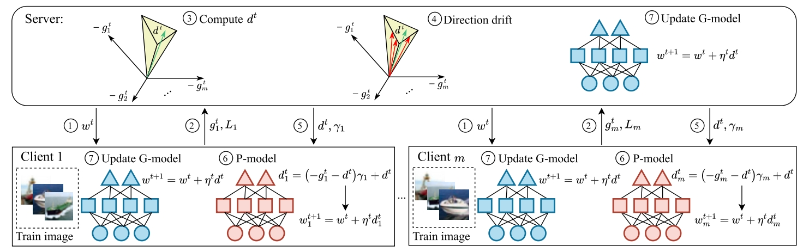
Balancing the trade-off between global and personalized performance in federated learning
Information Sciences 712, 122154
PDF
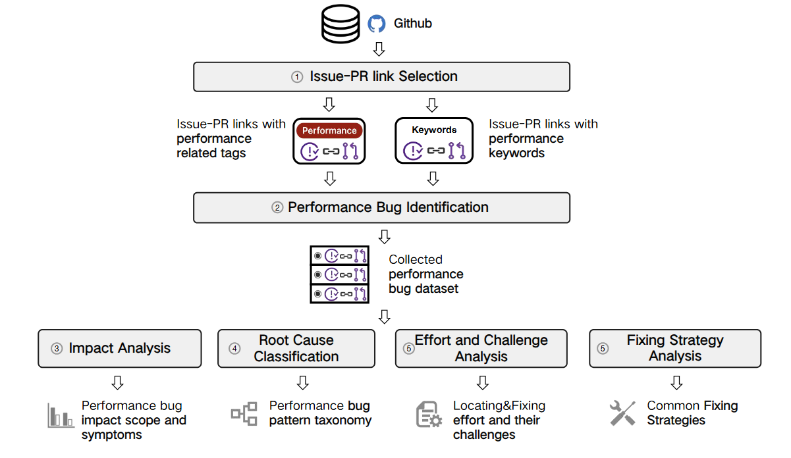
Towards Understanding Performance Bugs in Popular Data Science Libraries
Proceedings of the ACM on Software Engineering 2 (FSE), 2335-2358
PDF
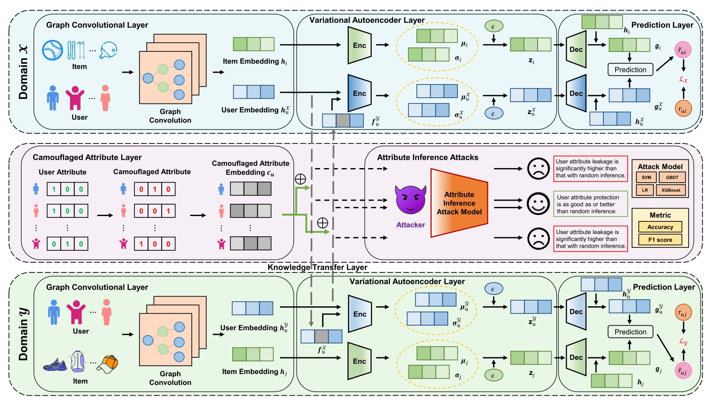
Camouflaged Variational Graph AutoEncoder against Attribute Inference Attacks for Cross-Domain Recommendation
IEEE Transactions on Knowledge and Data Engineering
PDF
2024
会议论文
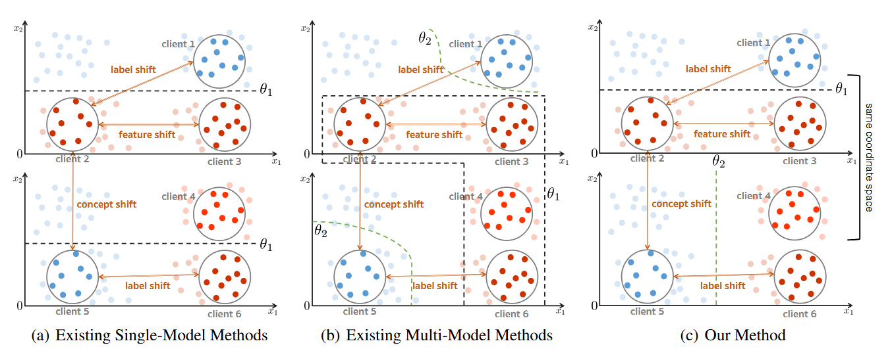
FedRC: Tackling Diverse Distribution Shifts Challenge in Federated Learning by Robust Clustering
Forty-first International Conference on Machine Learning (ICML 2024)
PDF
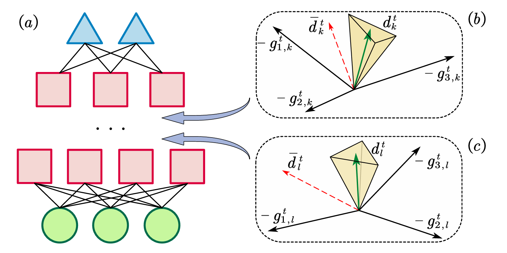
FedLF: Layer-Wise Fair Federated Learning
Proceedings of the AAAI Conference on Artificial Intelligence 38 (13), 14527
PDF
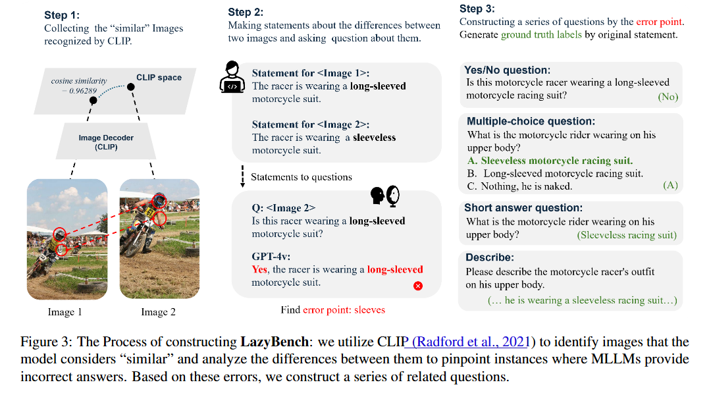
Difficult Task Yes but Simple Task No: Unveiling the Laziness in Multimodal LLMs
Findings of the 2024 Conference on Empirical Methods in Natural Language Processing (EMNLP 2024 Findings)
PDF
期刊论文
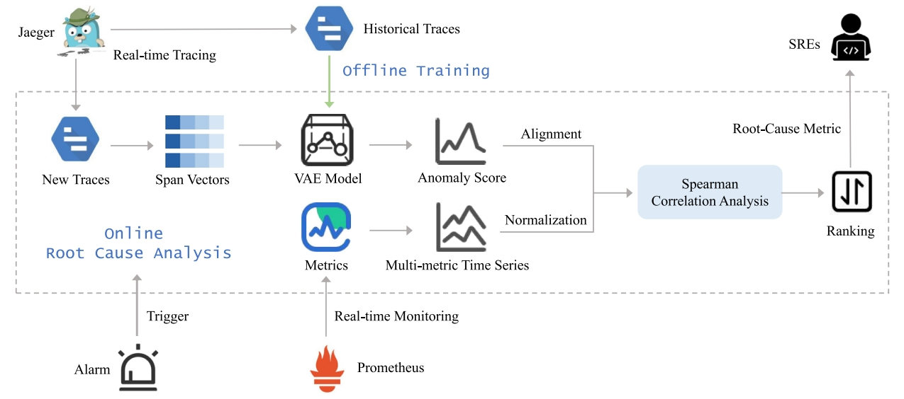
HeMiRCA: Fine-grained root cause analysis for microservices with heterogeneous data sources
ACM Transactions on Software Engineering and Methodology 33 (8), 1-25
PDF
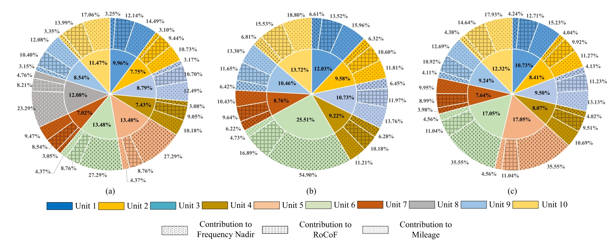
Comprehensive-contribution-based primary frequency regulation market design for the converter-integrated power system
IEEE Transactions on Power Systems
PDF
2023
会议论文
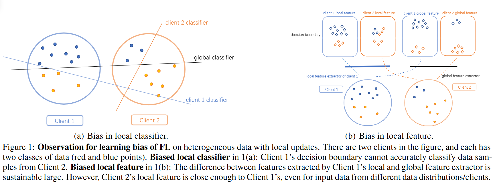
FedBR: Improving Federated Learning on Heterogeneous Data via Local Learning Bias Reduction
Fortieth International Conference on Machine Learning (ICML 2023)
PDF
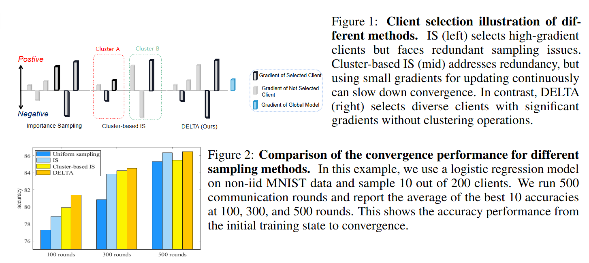
DELTA: Diverse Client Sampling for Fasting Federated Learning
Advances in Neural Information Processing Systems 36 (NeurIPS 2023)
PDF
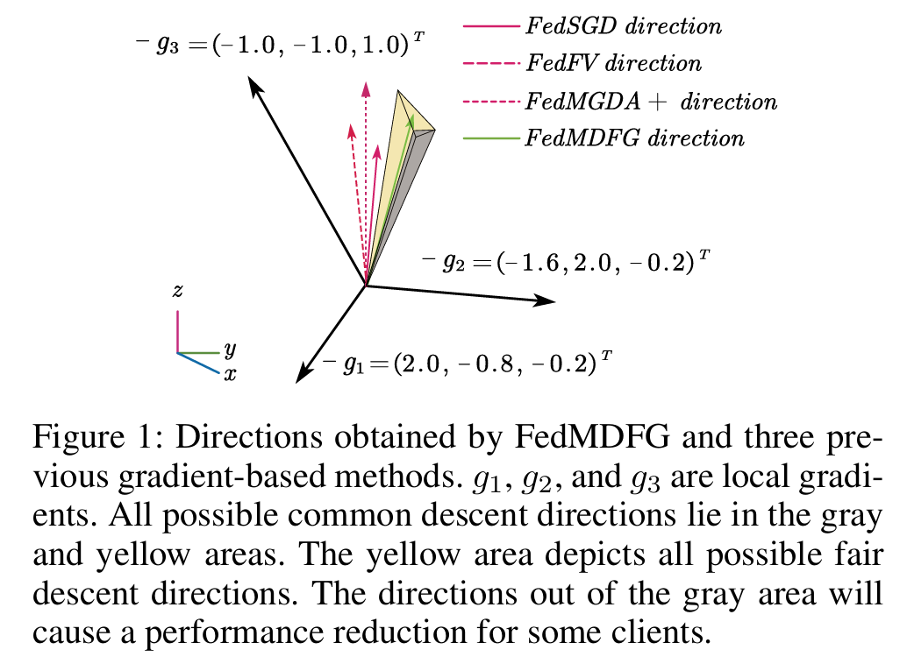
FedMDFG: Federated Learning with Multi-Gradient Descent and Fair Guidance
Proceedings of the 37th AAAI Conference on Artificial Intelligence 37 (8)
PDF
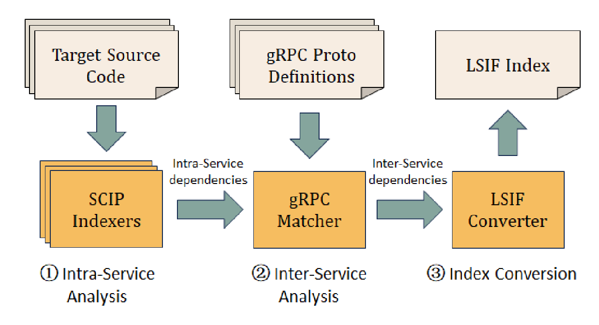
RPCover: Recovering gRPC Dependency in Multilingual Projects
2023 38th IEEE/ACM International Conference on Automated Software Engineering (ASE)
PDF
Incorporating Range Anxiety into Electric Vehicle Highway Charging Decisions: A Bayesian Game Analysis
e-Energy '23: Proceedings of the 14th ACM International Conference on Future Energy Systems
PDF
期刊论文
A data-driven approach for optimizing early-stage electric vehicle charging station placement
IEEE Transactions on Industrial Informatics
PDF